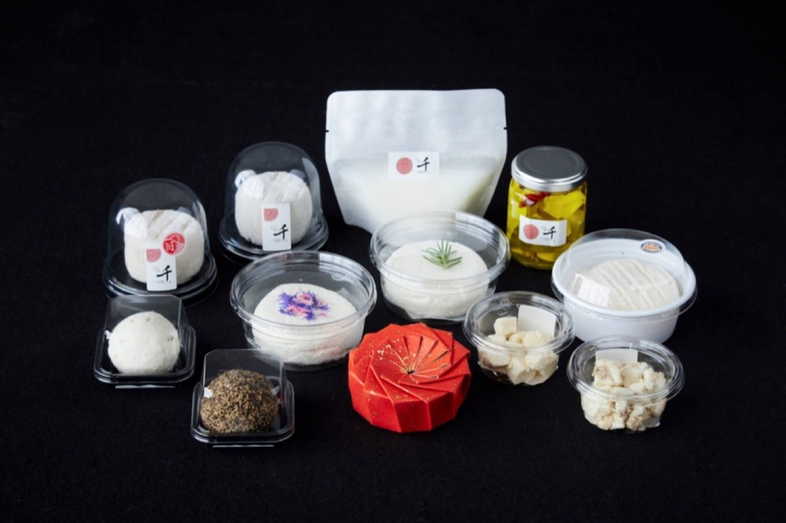
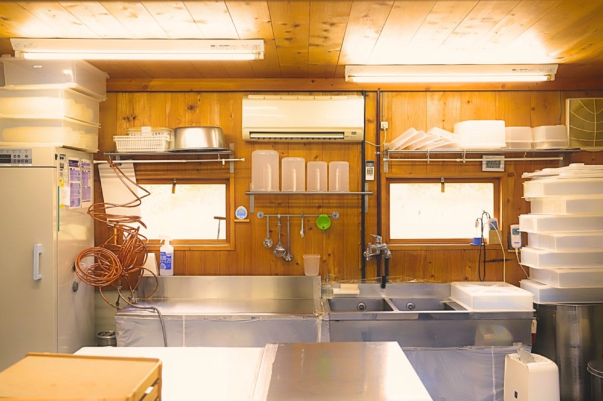
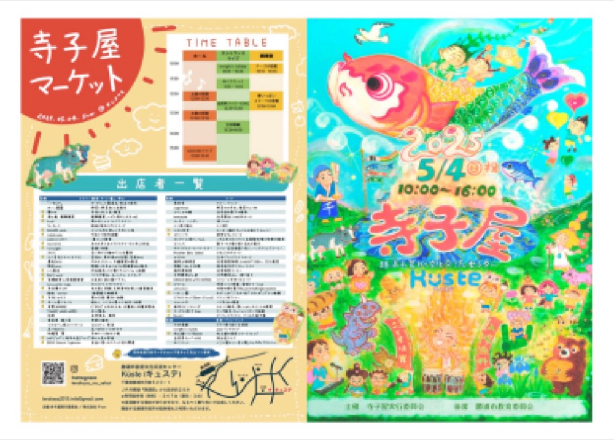
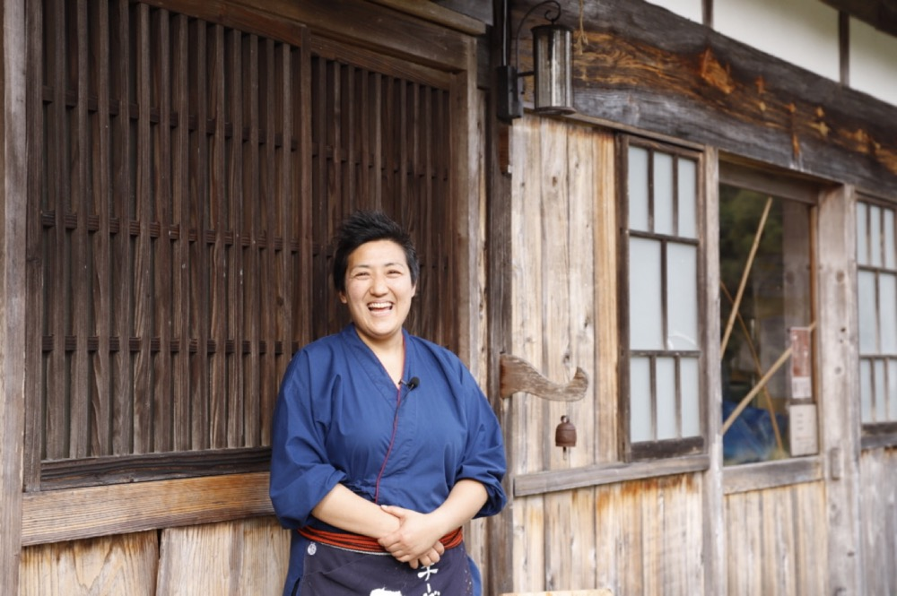

0.01gにこだわるチーズ工房
柴田 千代Chiyo Shibata
チーズ工房【千】sen 代表
千葉県富里市出身。18歳でチーズ職人を志し、東京農業大学卒業後は北海道とフランスでの修行。2014年に大多喜町で築120年の古民家を改装しチーズ工房【千】senを開業。2017年11月1日には、国内のチーズ生産者にとって最高賞にあたる農林水産大臣賞を受賞、史上最速、女性初、関東初の受賞となる。国内産の乳酸菌酵母を利用した「産土（うぶすな）」がWorld Cheese Award 2019-20 銅賞受賞。2022年フランス本部があるギルド協会よりギャルド・エ・ジュレ Garde et Juréを叙任。日本酒で表面を磨いたウォッシュチーズ「鼓動」がJapan Cheese Awards 2024 で最優秀部門賞受賞、Would Cheese Award 2024 GOLD（世界1位）の快挙を達成。
企業サイトを見るTRACK 01
0.01gにこだわるチーズ工房

千葉県夷隅郡大多喜町。山林に囲まれた静かな集落に、築120年の古民家を改装したチーズ工房がある。チーズ工房【千】sen。2014年に開業したこの小さな工房は、日本独自の乳酸菌と酵母を駆使し、機械に頼らない手仕事でクラフトチーズを生み出している。
主力商品は「竹炭」「鼓動」「産土（うぶすな）」といった個性的な名前のチーズたち。地元の素材にこだわり、0.01g単位で調合された微生物が織りなす味わいは、国内外のコンクールで次々と賞を獲得してきた。
普段はオンラインショップの予約販売が中心。月1回の直売日やイベントでは、予約は不要なものの限定数のみ販売されるそのチーズは、その希少性もさることながら、チーズそのものから溢れ出るこだわりが、熱心なファンを惹きつけてやまない。
TRACK 02
給与ゼロから世界3位へ

千葉県富里市出身の柴田。兄弟4人の3人目として育ってきた。幼い頃から食べることが大好きだった彼女にとって、食卓は家族の絆を結ぶ聖域だった。母の手作り味噌や厳選された醤油に囲まれた生活は、自然の恵みを尊ぶ価値観を養うきっかけとなった。
18歳、高校卒業を控えた進路選択の岐路で、彼女は決意する。「食べることは人間が絶対にやめられない行為だ。なら、食で人を良くする職業に就こう…そう思うようになりました」。進学先の東京農業大学オホーツクキャンパスでは乳製品（チーズ製造）を専門に学び、卒業論文では『カマンベールの熟成チーズについて』をテーマに研究を行った。大学卒業後は北海道内の酪農家のチーズ工房で汗を流し、チーズ作りの基礎を叩き込んだ。
さらに27歳でフランスへ渡り、バックパックを背負って農家を巡る1年間の修行旅へ。カマンベールへの憧れを胸に、4軒のチーズ農家で技術を吸収した。だが、そこで彼女が見たのは、日本のチーズ文化の未熟さだった。「日本でチーズを作ってる人は本当にいるの？」とフランス人に呆れ顔で問われ、悔しさと使命感が燃え上がる。そして帰国後、10年ぶりに故郷へ戻った彼女を待っていたのは、団地とベッドタウンに変わり果てた富里の姿。畑や栗林が消え、大自然から遠ざかった故郷に愕然としつつ、彼女は日本の美しさを、チーズを通して世界に届けたいと思うようになる。


TRACK 03
私しか作れないものを作る
チーズ工房千の強みは、愛の詰まった手仕事とその道程にある。主力商品は18種類に及び、「竹炭」は農林水産大臣賞、「鼓動」は2024年の日本チーズアワード金賞とワールドチーズアワード金賞、「産土（うぶすな）」は2019年の世界銅賞を獲得。地元の乳酸菌や九十九里の塩、350年続く酒蔵の日本酒で洗ったチーズまで、千葉のテロワール（風土）を凝縮した作品群は、他では味わえない独自性を持つ。副産物のホエイを使ったドレッシングも農福連携で開発しており、廃棄ゼロを目指す持続可能性への取り組みも評価が高い。
量産ではなく品質と物語に徹するのが、彼女のこだわり。500円のモッツァレラを1000個売るより、5万円のチーズを10個売る道を選ぶ。「私しか作れないものを作り、提供するのが今のベスト」と言い切る彼女は、家庭の食卓を彩る手に取りやすい商品と、大使館や富裕層向けに作る特別なチーズの両方で、それぞれの戦略を描く。
工房の扉が開くのは、月に1回だけだ。日常の喧騒から離れた静かな山林に、ひっそりと客が集う。普段はオンラインでしか買えないチーズを直接手にするため、訪れる者たちはその日を待ち焦がれる。機械では再現できない手仕事の美しさを、千葉の風土と共に世界に放っている。